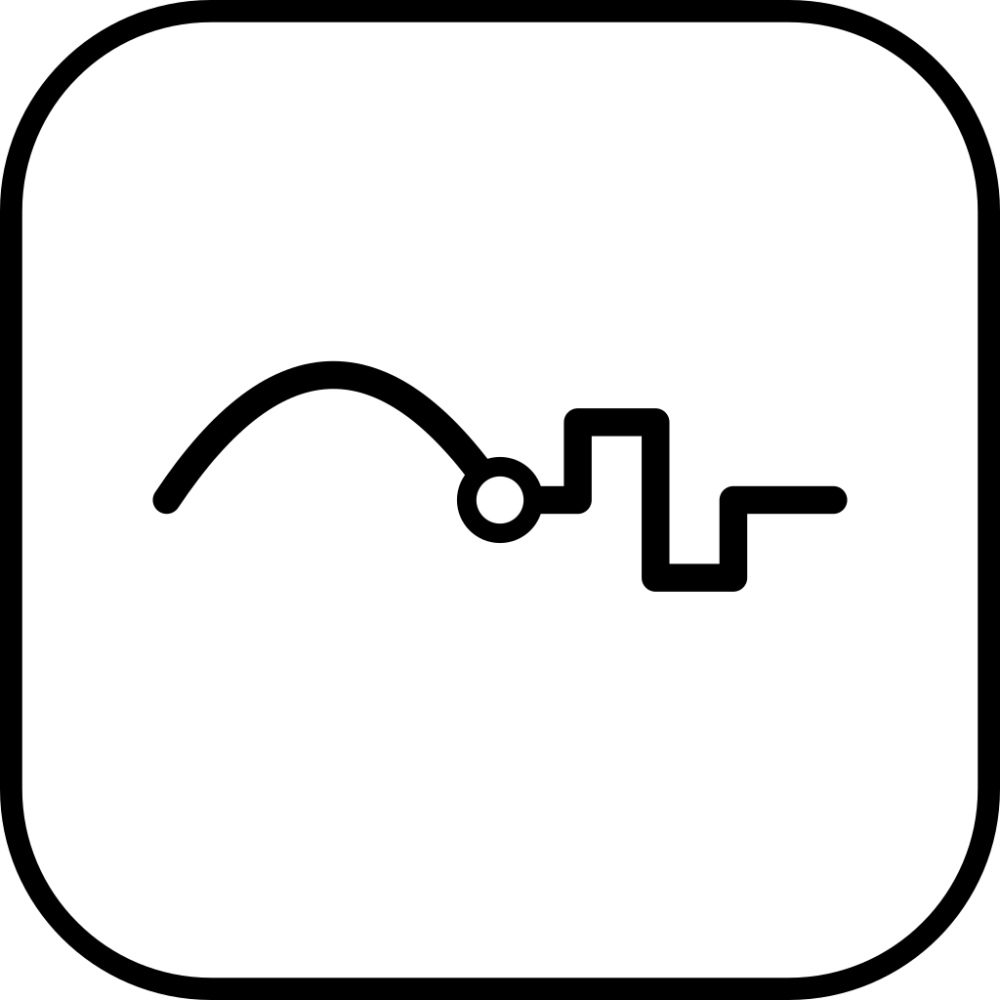
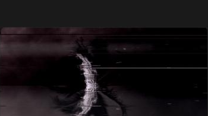
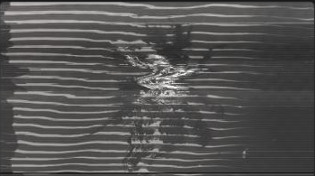

CIRCUIT BENTEight presets, full manual control, running live in Final Cut Pro.
LAVENDER
Energy 0.40
0.45
CIRCUIT BENT started as a question: could the exact look of a circuit-bent glitch box feeding a video mixer, finished on a CRT, be captured without keeping that hardware plugged in and powered on every time it's needed.
The chain is built as a simulation instead of a filter. It runs forward in real time: tone jumps, torn frames, rolling picture and stutters keep happening for as long as the clip plays, driven by a random seed, the same way the real hardware never did quite the same thing twice.
The part that took longest wasn't the look. It was making that simulation deterministic: the same settings at the same point in the clip always render the same way, so scrubbing, rendering and re-exporting all match. A hardware glitch box never had to promise that. A plugin does.
It ships as one plugin, two templates, and a license key emailed directly after purchase. No subscription, no phone-home, no account to create.
destr .45, stripe .85, screen on0.400.200.20Lavender0.62Off0.400.300.500.00None1×0.10Off0.500.600.300.351.00×30s4.61 HzDestr · Melt · Wobble · Stripe · Neon · StreakDrop CIRCUIT BENT on your clip.
Choose one of eight presets.
defaultselected—
It keeps generating damage for as long as the clip plays.
00:00:04:12
00:00:18:00

12/1215/1510,0008/804K60pA perpetual license, bought once. Works offline — the license check never phones home — and keeps rendering old projects correctly after you update.
Launched at $69. Moves to $99 once the intro window closes.